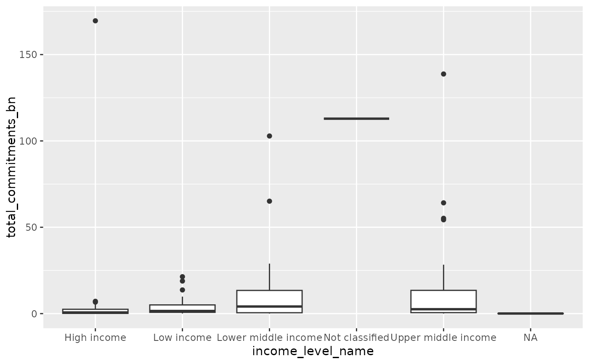

A dataset containing Chinese development finance commitments and related country characteristics derived from the Global Chinese Development Finance (GCDF) Dataset 3.0, World Bank World Development Indicators, and IMF World Economic Outlook data. The dataset includes total commitments, weighted average interest rates, and key country characteristics like GDP, population, region and income group.
Format
A data frame with approximately 150 rows and 8 variables:
- country_name
Character. Country name
- iso3c
Character. ISO 3-letter country code
- total_commitments_bn
Numeric. Total Chinese development finance commitments in billions of constant 2021 USD
- weighted_interest_rate
Numeric. Weighted average interest rate across all loans, weighted by commitment amount
- region_name
Character. World Bank geographic region
- income_level_name
Character. World Bank income group classification
- gdp_usd_bn
Numeric. Nominal GDP in billions of USD (2021)
- population_mn
Numeric. Population in millions (2021)
Source
- GCDF 3.0
Commitment and interest rate data from AidData's Global Chinese Development Finance Dataset, Version 3.0
- WDI
Region and income group classifications from World Bank World Development Indicators
- WEO
GDP and population data from IMF World Economic Outlook (Fall 2024)
Examples
# Get top 10 recipients by commitment amount
gcdf_country_commitments |>
dplyr::arrange(desc(total_commitments_bn)) |>
head(10)
#> # A tibble: 10 × 8
#> country_name iso3c total_commitments_bn weighted_interest_rate region_name
#> <chr> <chr> <dbl> <dbl> <chr>
#> 1 Russia RUS 170. 3.86 Europe & Cent…
#> 2 Argentina ARG 139. 7.17 Latin America…
#> 3 Venezuela VEN 113. 5.02 Latin America…
#> 4 Pakistan PAK 103. 3.63 South Asia
#> 5 Angola AGO 65.1 4.34 Sub-Saharan A…
#> 6 Kazakhstan KAZ 64.1 4.60 Europe & Cent…
#> 7 Indonesia IDN 55.2 4.87 East Asia & P…
#> 8 Brazil BRA 54.3 3.82 Latin America…
#> 9 Vietnam VNM 28.9 3.73 East Asia & P…
#> 10 Turkey TUR 28.3 3.82 Europe & Cent…
#> # ℹ 3 more variables: income_level_name <chr>, gdp_usd_bn <dbl>,
#> # population_mn <dbl>
# Calculate average commitment size by region
gcdf_country_commitments |>
dplyr::group_by(region_name) |>
dplyr::summarize(
avg_commitment_bn = mean(total_commitments_bn, na.rm = TRUE)
)
#> # A tibble: 7 × 2
#> region_name avg_commitment_bn
#> <chr> <dbl>
#> 1 East Asia & Pacific 9.45
#> 2 Europe & Central Asia 16.7
#> 3 Latin America & Caribbean 12.5
#> 4 Middle East & North Africa 6.47
#> 5 South Asia 22.8
#> 6 Sub-Saharan Africa 6.38
#> 7 NA 0.0599
# Create basic visualization of commitments by income group
if (requireNamespace("ggplot2", quietly = TRUE)) {
ggplot2::ggplot(
gcdf_country_commitments,
ggplot2::aes(x = income_level_name, y = total_commitments_bn)
) +
ggplot2::geom_boxplot()
}
